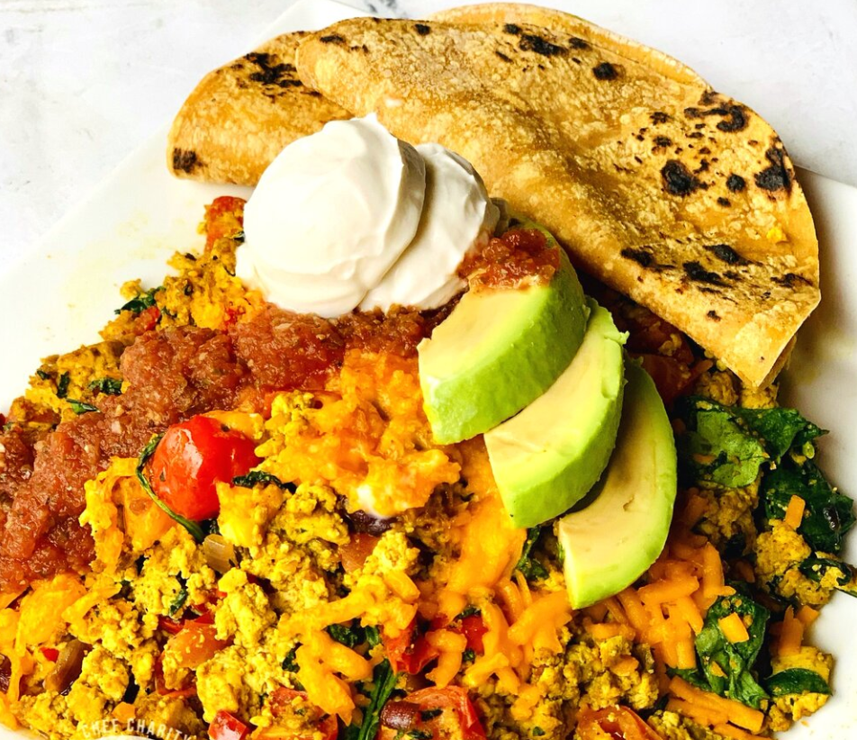

Spanish Tofu Scramble
April 7, 2025

Servings: 3-4
Ingredients
2 tablespoons of neutral oil, such as grape seed or avocado
1/2 red, white, or yellow onion, small diced
1/2 green or red bell pepper, small diced
Instructions
Spoon your Spanish tofu scramble on a plate, add suggested toppings. Serve with warm tortillas.
Chef’s TIP: Add the tomatoes after the tofu so they stay fresh.